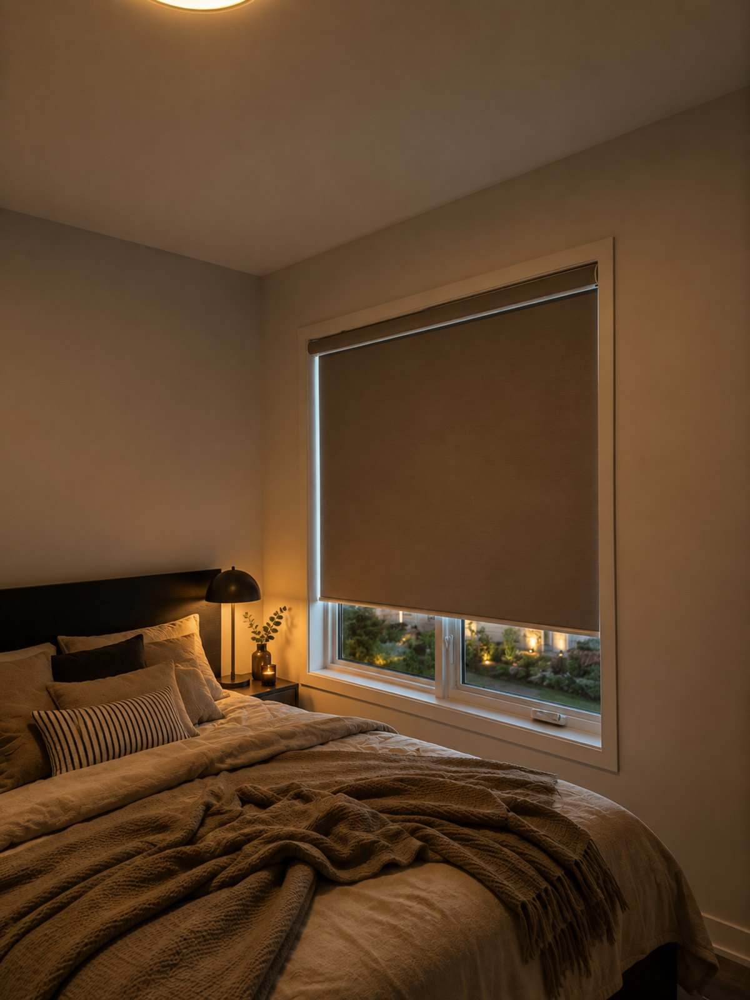
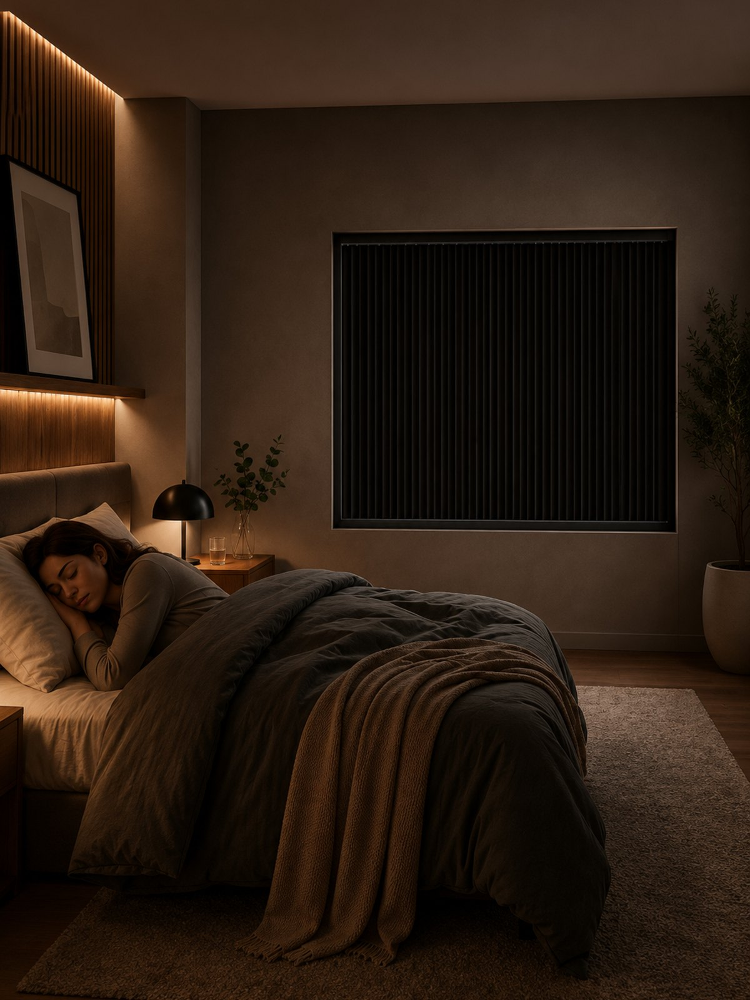

Le problème des stores occultants ordinaires
Le tissu occultant est entièrement opaque, mais un store ordinaire pend à quelques millimètres du cadre. La lumière s’engouffre autour de ces bords en barres lumineuses — et un matin d’été à Montréal, ce halo arrive avant 5 h. On peut ajouter des rails, des rideaux et du chevauchement pour le combattre, mais on colmate des fentes que le store lui-même crée.

Ce qui rend le store Blockout différent
Le store Blockout installe un mince cadre d’aluminium autour de toute l’ouverture de la fenêtre. Le tissu occultant coulisse à l’intérieur de ce cadre dans des rails latéraux tendus, et le haut et le bas se scellent contre lui. Chaque bord est fermé — le haut, les deux côtés et le bas — alors la lumière n’a tout simplement nulle part où passer.
- Cadre scellé — les bords du tissu logent dans les rails ; aucune fente latérale, aucune fente au bas.
- Tendu, sans cordon — tirez la barre du bas et elle reste exactement où vous la laissez. Ni cordon ni chaînette — sécuritaire pour les enfants par conception.
- Haut-bas ou bas-haut — abaissez-le par le haut pour laisser entrer un peu de lumière, ou fermez-le complètement.
- Pose intérieure ou extérieure — l’intérieure exige environ 2,5 cm (1 po) de profondeur d’embrasure ; l’extérieure, environ 7,5 cm (3 po) de surface plane.
- Options motorisées et intelligentes — programmez-le, commandez-le par appli ou par la voix.
- Plus silencieux et plus frais — le tissu scellé atténue aussi le bruit extérieur et réduit le gain de chaleur estival.

Pour qui c’est fait
- Bébés et tout-petits — siestes et couchers tôt en saison lumineuse. Voyez notre guide chambre de bébé.
- Travailleurs de nuit et couche-tard — un vrai sommeil à 10 h.
- Dormeurs légers et migraineux.
- Cinémas maison et salles de jeu.
- Quiconque vit dans un condo lumineux avec lampadaires et fenêtres des voisins.
Avantages et inconvénients, honnêtement
Avantages
- Vraiment 100 % noir — le cadre scelle chaque bord ; ni halo ni barres de lumière.
- Sans cordon et sécuritaire pour les enfants — une barre tendue, rien qui pend.
- Flexibilité haut-bas / bas-haut.
- Pièce plus silencieuse et plus fraîche grâce au scellage.
- Motorisé et prêt pour la maison intelligente.
- Fait sur mesure pour chaque fenêtre.
Inconvénients
- Le cadre est visible — mince et soigné, mais on le voit autour de la fenêtre. Choisissez le fini assorti à vos moulures.
- Coûte plus qu’un enrouleur occultant ordinaire — vous payez pour le cadre et le scellage, et c’est exactement ce qui donne la noirceur.
- Exige un peu de profondeur ou de surface plane pour poser le cadre — on vérifie à la consultation.
- La noirceur totale n’est pas pour les salons — là, un enrouleur tamisant ou un store zébré.
En un coup d’œil
| Noirceur | 100 % — cadre scellé |
|---|---|
| Intimité | Absolue |
| Isolation | Bonne ; les bords scellés aident |
| Bruit | Nettement plus silencieux |
| Style | Propre ; cadre visible |
| Pièces idéales | Chambres, chambres de bébé, cinémas maison, chambres de travailleurs de nuit, condos lumineux |
| Options | Pose intérieure / extérieure · haut-bas/bas-haut · sans cordon · motorisé · finis du cadre |
On peut s’approcher de la noirceur totale en ajoutant des rails latéraux à un enrouleur occultant — on le fait souvent. Le store Blockout en est la version conçue exprès : le cadre est le système de rails, haut et bas compris, en un seul ensemble propre. Si la noirceur est toute la raison d’être de la pièce, c’est celui-là.
Quand choisir autre chose
- Vous voulez la noirceur et une isolation maximale sur une fenêtre froide ? Un alvéolaire occultant avec rails.
- Vous préférez un look doux et décoratif ? Des rideaux doublés occultants ou un store bateau (attendez-vous à un peu de lumière sur les bords).
Questions fréquentes
Le store Blockout est-il vraiment occultant à 100 % ?
Oui. Contrairement à un store occultant ordinaire, le tissu coulisse à l’intérieur d’un cadre qui scelle le haut, les deux côtés et le bas de la fenêtre, alors il n’y a aucun bord par où la lumière peut fuir.
Quelle est la différence entre un store Blockout et un enrouleur occultant ?
Un enrouleur occultant utilise un tissu opaque mais pend avec de petites fentes sur les côtés par où la lumière entre. Un store Blockout place le tissu dans un cadre scellé avec des rails latéraux tendus — aucune fente.
Est-il sécuritaire pour les enfants ?
Oui — il est sans cordon. On déplace une barre du bas tendue ; il n’y a ni cordon ni chaînette.
Peut-on le motoriser ?
Oui, avec commande par appli, par la voix et par horaire — une belle combinaison pour une chambre qui s’ouvre doucement à votre heure de réveil.
Convient-il à ma fenêtre ?
La pose intérieure exige environ 2,5 cm de profondeur d’embrasure ; la pose extérieure, environ 7,5 cm de surface plane autour de la fenêtre. On le confirme à votre consultation gratuite.
Est-ce que vous l’installez ?
Oui — mesuré, fabriqué à la taille et installé gratuitement partout à Montréal.